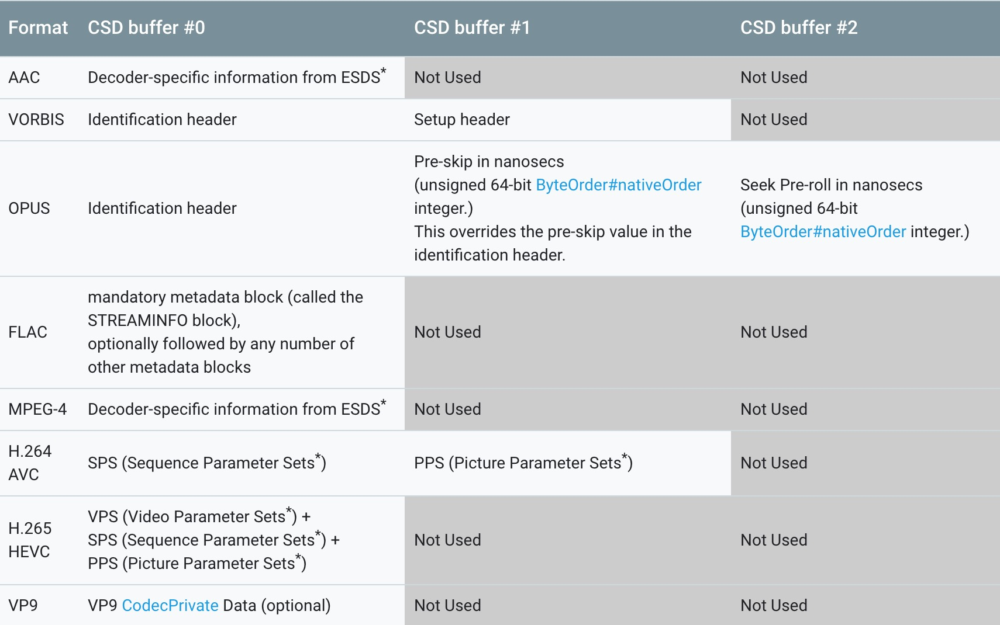

简介
Opus是一个有损声音编码的格式，由Xiph.Org基金会开发，之后由互联网工程任务组进行标准化，目标是希望用单一格式包含声音和语音，取代Speex和Vorbis，且适用于网络上低延迟的即时声音传输，标准格式定义于RFC 6716文件。Opus格式是一个开放格式，使用上没有任何专利或限制。
在官方的examples测试案例中，就算有30%的丢包率，也基本能够听清楚人声，这对于即时的声音传输场景来说非常重要。并且它支持动态、无缝的调节比特率与音频带宽，在网络环境多变的场景下更能保证音频的质量。
同时它是WebRTC中默认的音频编码格式、也是WebM视频文件中音频的编码格式。由于最近项目中需要对Opus音频流进行解码，遇到了很多问题，网上基本也搜不到相关的资料与demo，因此诞生了这篇文章，希望能够帮助到有需要的同学。
技术特性
Opus可以处理各种音频应用，包括IP语音、视频会议、游戏内聊天、流音乐、甚至远程现场音乐表演。它可以从低比特率窄带语音扩展到非常高清音质的立体声音乐。支持的功能包括：
- 6 kb/秒到510 kb/秒的比特率；单一频道最高256 kb/秒
- 采样率从8 kHz（窄带）到48 kHz（全频）
- 帧大小从2.5毫秒到60毫秒
- 支持恒定比特率（CBR）、受约束比特率（CVBR）和可变比特率（VBR）
- 支持语音（SILK层）和音乐（CELT层）的单独或混合模式
- 支持单声道和立体声；支持多达255个音轨（多数据流的帧）
- 可动态调节比特率，音频带宽和帧大小
- 良好的鲁棒性丢失率和数据包丢失隐藏（PLC）
- 浮点和定点实现
MediaCodec解码
从官方的media-formats文档中我们可以知道，从Android 5.0+开始，官方就已经添加了Opus原生的编解码支持，我们使用MediaCodec就能够对其进行编解码的实现。关于MediaCodec的使用就不在这里做介绍了，大家可以参考下官方介绍文档，非常的详细。
于是乎很快就撸起Android Studio开始编写解码相关的代码，最开始初始化代码是这样子的，通过一些基本参数如：sampleRate和channelCount初始化MediaCodec并启动：
1 | final int sampleRate = 48000; |
之后就是通过queueInputBuffer()将音频流数据送进MediaCodec进行解码，然后通过dequeueOutputBuffer从缓冲区拿到解码后的数据，这里代码先忽略，还不是重点。当第一帧数据通过queueInputBuffer()进入MediaCodec的时候，就会报以下的错误：
1 | 2019-09-04 19:48:36.701 17584-17678/com.codezjx.opusdecode E/ACodec: [OMX.google.opus.decoder] ERROR(0x80001001) |
紧接着调用dequeueOutputBuffer()取出解码后数据的时候，就会报IllegalStateException，表明现在MediaCodec不在执行状态，也就是说上面解码的过程出错，导致MediaCodec的状态异常了。
1 | --------- beginning of crash |
这个时候就比较纳闷了，设备已经是Android 5.0+，应该是支持Opus解码的。猜测应该是参数设置有问题，因此又回去看MediaCodec的官方文档，果然发现漏了一些很重要的参数：CSD buffer。
Codec-specific Data
对于某些格式，特别是AAC音频和MPEG4、H.264和H.265视频格式，要求实际数据需要以多个缓冲区为前缀，包含设置数据或编解码器特定数据。下图是官方对于不同格式需要设置的不同CSD buffer数据的对照图，其中Opus音频解码需要在CSD buffer #0/#1/#2三个缓冲区分别设置不同的参数。

设置参数的方式有两种，第一种比较复杂，需要在MediaCodec.start()之后，且在解码任何数据帧之前，将这些数据提交给MediaCodec，需要通过BUFFER_FLAG_CODEC_CONFIG这个flag进行标记：
1 | mediaCodec.queueInputBuffer(inputIdex, 0, bytes.length, 0, MediaCodec.BUFFER_FLAG_CODEC_CONFIG); |
第二种方式就简单很多，直接通过MediaFormat.setByteBuffer()方法，就可以非常简单的对这些缓冲区进行赋值，推荐第二种方式：
1 | ByteBuffer csd0 = ByteBuffer.wrap(bytes); |
其中Pre-skip和Pre-roll参数目前还没有用到，因此设置默认值0应该就可以了，注意这里格式需要是64位的无符号整数，并且是nativeOrder，Android上一般就是小端模式。但是官方文档中对于csd-0需要设置的参数就没有详细介绍了，只写明了是Identification header，也就是标识头，因此我们需要对这个标识头再进行详细分析。
Opus Identification header
关于Opus的标识头，可以从rfc7845标准文档中找到详细的解答，格式如下：
1 | 0 1 2 3 |
Identification header主要由8个参数组成，分别为：
- Magic Signature：固定头，占8个字节，为字符串OpusHead
- Version：版本号，占1字节，固定为0x01
- Channel Count：通道数，占1字节，根据音频流通道自行设置，如0x02
- Pre-skip：回放的时候从解码器中丢弃的samples数量，占2字节，为小端模式，默认设置0x00, 0x00就好
- Input Sample Rate (Hz)：音频流的Sample Rate，占4字节，为小端模式，根据实际情况自行设置
- Output Gain：输出增益，占2字节，为小端模式，没有用到默认设置0x00, 0x00就好
- Channel Mapping Family：通道映射系列，占1字节，默认设置0x00就好
- Channel Mapping Table：可选参数，上面的Family默认设置0x00的时候可忽略
最终MediaCodec的初始化代码如下，增加了对csd-0/1/23个缓冲区的设置：
1 | final int sampleRate = 48000; |
紧接着通过queueInputBuffer()将音频流数据送进MediaCodec进行解码，然后通过dequeueOutputBuffer从缓冲区拿到解码后的数据，最后将数据写到AudioTrack中进行播放，即可完成Opus解码与声音回放。
1 | MediaCodec.BufferInfo decodeBufferInfo = new MediaCodec.BufferInfo(); |